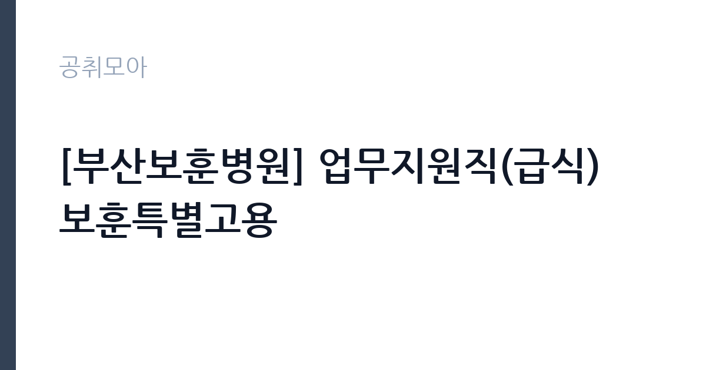

[공공기관] [부산보훈병원] 업무지원직(급식) 보훈특별고용
한국보훈복지의료공단 · 부산 · 마감 2026-11-12 (D-11) · 출처 잡알리오

한눈에 보는 모집 조건
| 기관 | 한국보훈복지의료공단 |
|---|---|
| 공고명 | [부산보훈병원] 업무지원직(급식) 보훈특별고용 |
| 고용형태 | 정규직 |
| 근무지 | 부산 |
| 게시일 | 2026-11-02 |
| 마감일 | 2026-11-12 (D-11) |
지원자격, 이렇게 읽으세요
- 공공기관 채용공시
- 세부 조건은 원문 공고문 확인
응시자격은 네 가지를 모두 충족해야 합니다. 급식 직무에서 교대근무가 가능해야 하고 주말과 휴일에도 근무할 수 있어야 합니다. 공단 인사규정 제18조의 결격사유에 해당하지 않아야 하고, 업무지원직 인사관리 시행세칙 제13조에 따라 정년인 만 60세에 도달하지 않아야 합니다. 그리고 부산보훈병원의 다른 공고에 중복 지원할 수 없습니다. 보훈특별고용은 국가유공자 등 취업지원대상자의 고용을 촉진하기 위한 별도 절차로 운영되므로, 지원 전 본인이 대상자 범위에 해당하는지 확인하는 것이 실질적으로 중요합니다. 접수 자체가 부산지방보훈청을 통해 이뤄지는 점도 일반 공채와 다릅니다.
이 공고의 포인트
첫 번째 포인트는 무기계약직이라는 점입니다. 같은 병원의 계약직 채용과 달리 정년이 정해져 있고, 계약 갱신 부담 없이 장기 근무가 가능한 고용형태입니다. 두 번째는 5명이라는 규모입니다. 이번 부산보훈병원 공고 세 건 가운데 선발 인원이 가장 많습니다. 세 번째는 전형 방식입니다. 서류전형은 응시자격 적격 여부만 보고, 면접 100점으로 60점 이상자 가운데 고득점 순으로 선발합니다. 장애인은 전형단계별 10퍼센트 가점을 받습니다.
전형은 어떻게 진행되나
1차 서류전형은 11월 2일부터 11월 12일까지 접수된 서류로 응시자격 적격 여부를 심사하고, 합격자는 11월 20일 금요일에 발표합니다. 2차 면접전형은 11월 24일 화요일에 진행되며 면접 성적 100퍼센트로 60점 이상자 가운데 고득점 순으로 선발합니다. 최종합격자는 11월 26일 목요일에 발표합니다. 접수 방법이 다른 공고와 다릅니다. 공고문은 접수 방법을 부산지방보훈청 문의로 안내하고 있고, 보훈특별고용 절차에 따라 진행되므로 방문 전에 전화로 접수 방식과 준비 서류를 확인하는 것이 안전합니다.
원문에서 확인한 전형 방식
가. 업무지원직(급식) - 교대근무 가능자(주말 및 휴일근무) -공단 인사규정 제18조에 정한 결격 사유에 해당하지 않는 자 -공단 업무지원직 인사관리 시행세칙 제 13조에 따라 정년(만60)세에 도달하지 않은 자 -부산보훈병원 타공고 중복지원 불가(중복지원시 서류심사 불합격할 수 있음) ※전 항을 모두 충족해야함
이런 분께 추천해요
- 교대근무와 주말·휴일 근무가 가능한 분. 급식 직무의 필수 조건입니다.
- 국가유공자 등 보훈특별고용 대상자. 취업지원대상자 고용 촉진을 위한 별도 절차로 운영됩니다.
- 부산 사상구 인근에서 장기 근무를 원하는 분. 무기계약직으로 정년은 만 60세입니다.
지원 전 체크리스트
- 교대근무와 주말·휴일 근무가 가능한가. 응시자격에 명시된 필수 조건입니다.
- 만 60세 미만인가. 업무지원직 인사관리 시행세칙 제13조가 적용됩니다.
- 보훈특별고용 대상자 범위에 해당하는지 확인했는가. 접수처가 부산지방보훈청으로 안내되어 있습니다.
- 부산보훈병원의 다른 공고에 중복 지원하지 않았는가. 중복 시 불합격 사유가 됩니다.
모집 일정과 제출 타이밍
서류접수는 2026년 11월 2일 월요일부터 11월 12일 목요일까지입니다. 계약직·청년인턴 공고와 달리 마감 시각이 오전 10시로 명시되어 있지 않지만, 마감일 이전에 여유 있게 접수하는 편이 안전합니다. 서류전형 합격자는 11월 20일 금요일, 면접은 11월 24일 화요일, 최종합격자는 11월 26일 목요일에 발표합니다. 접수 방법과 제출서류는 부산지방보훈청에 문의해 확인해야 합니다.
직무 이해하기: 공공기관
업무지원직(급식)은 병원 영양실과 조리실에서 식사 준비와 배식을 지원하는 직무입니다. 구체적으로는 식자재 손질과 조리 보조, 배식, 식기 세척과 위생 관리, 배식 시간에 맞춘 작업 일정 수행이 포함됩니다. 병원 급식은 환자식과 직원식으로 나뉘고 치료식처럼 별도 관리가 필요한 식단이 있어 정해진 배식 동선을 지키는 것이 중요합니다. 교대근무와 주말·휴일 근무가 필수 조건인 이유도 병원이 365일 운영되기 때문입니다. 무기계약직으로 채용되므로 위생 관리와 안전 수칙 준수가 장기 근무 평가에 계속 영향을 줍니다.
자기소개서 작성 팁
이 공고도 면접 100점으로 당락이 갈리므로 자기소개서는 면접의 재료가 됩니다. 첫 문단에서는 교대근무와 주말 근무가 가능하다는 점을 근무 가능 시간과 함께 분명히 밝히십시오. 급식 직무에서 가장 먼저 확인하는 조건입니다. 두 번째 문단에서는 위생과 안전에 대한 태도를 사례로 쓰십시오. 조리나 식품 관련 근무 경험이 있다면 위생 수칙을 어떻게 지켰는지 구체적으로 적으십시오. 세 번째로는 함께 일하는 사람과의 협업 경험을 넣으십시오. 급식은 배식 시간에 여러 사람이 맞물려 움직이는 일이라 협업 태도가 평가에 영향을 줍니다. 마지막으로 장기 근무 의사를 밝히면 무기계약직 채용 취지와 맞아떨어집니다.
면접 준비 포인트
면접은 60점 이상이면 합격 후보가 되고 고득점 순으로 5명을 선발합니다. 질문은 세 갈래로 예상됩니다. 첫째 근무 조건 수용 여부입니다. 교대근무와 주말·휴일 근무가 가능한지, 통근은 어떻게 하는지를 확인합니다. 둘째 위생 관리에 대한 이해입니다. 식자재 보관 온도나 개인위생 수칙처럼 기본적인 내용을 물을 수 있습니다. 셋째 협업과 갈등 상황입니다. 바쁜 배식 시간에 동료와 의견이 부딪혔을 때 어떻게 했는지를 묻습니다. 답변은 상황, 판단, 조치 순서로 정리하고, 마지막에 근무 시작 가능일을 분명히 말하십시오.
급여·근무조건 읽는 법
공고문에는 임금이 금액으로 명시되어 있지 않아 원문 공고문과 부산보훈병원 총무부 확인이 필요합니다. 다만 무기계약직으로 채용된다는 점에서 기관의 무기계약직 보수 기준이 적용됩니다. 참고로 알리오 2025년 결산 공시 기준 한국보훈복지의료공단의 일반정규직 1인당 평균보수액은 7,172만원, 신입사원 초임은 4,170만원입니다. 무기계약직 평균보수액은 이 공시에 별도로 표시되어 있지 않습니다. 급식 직무는 교대근무와 주말 근무가 포함되므로 수당 항목이 월 급여에서 차지하는 비중이 큽니다. 기본급과 각종 수당, 명절휴가비 지급 기준을 원문에서 확인해 실제 수령액을 계산하십시오.
자주 묻는 질문
- 무기계약직인가요, 계약직인가요?
알리오 공시 기준 고용형태는 무기계약직입니다. 정년은 만 60세이며, 계약 갱신 부담 없이 근무하는 고용형태입니다. - 접수는 어디서 하나요?
공고문은 접수 방법을 부산지방보훈청 문의로 안내하고 있습니다. 보훈특별고용 절차에 따라 접수 방식과 제출서류가 정해지므로 방문 전에 전화로 확인하는 것이 안전합니다. - 급식 경력이 없어도 지원할 수 있나요?
공고문은 급식 경력을 별도 응시요건으로 두지 않고, 교대근무와 주말·휴일 근무 가능 여부를 필수 조건으로 제시하고 있습니다. 다만 관련 경험이 있으면 면접에서 유리합니다.
함께 보면 좋은 공고
[공공기관] 대한적십자사 인천사할린동포복지회관 직원(요양보호사) 채용 공고 — 마감 2026-11-17[공공기관] 건설분야 기간제 근로자 채용공고 [HVDC건설본부] — 마감 2026-11-16[공공기관] 대한적십자사 인천사할린동포복지회관 직원(요양보호사) 채용 공고 — 마감 2026-11-17출처: 잡알리오 공개정보를 바탕으로 공취모아가 정리한 안내글입니다. 모집 조건·일정은 변경될 수 있으니 지원 전 반드시 원문 공고문을 확인하세요. 본 글은 정보 제공용이며 합격을 보장하지 않습니다.